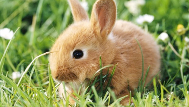
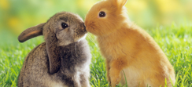
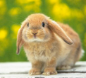
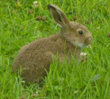

świat królików

Obecnie uznaje ponad 40 ras królików, różniących się wielkością, kolorem sierści i uszami, a inne organizacje uznają jeszcze większą ich liczbę, np. w Wielkiej Brytanii obecnie uznaje się 61 ras w 531 wariacjach (w 1850 było tylko 10 ras królików, wariacje zaś to różnice koloru sierści). Do dziś uważa się, że króliki należą do gryzoni. Opinia taka przyjęła się ze względu na uzębienie tego zwierzątka. To nie prawda! Króliki należą do rzędu zajęczaków . Królik miniaturka pochodzi od dzikiego rólika śródziemnomorskiego należącego do rzędu zajęczaków i rodziny zającowatych. Nasze uszatki mają bardzo dobry wzrok, pomaga im to w ich dzikiej naturze szybko uniknąć niebezpiecznych sytuacji. Oczy królika są bocznie rozstawione, co oznacza, iż królik obejmuje wzrokiem pole widzenia o promieniu 300 stopni. Dodając do tego, że szyja jest bardzo ruchliwa nasz pyszczek praktycznie widzi wszystko dookoła J. Każde oko może poruszać się osobno (podobnie jak uszy ). Należy jednak pamiętać, że królik znacznie lepiej widzi obiekt z dalekiej odległości niż z bliska. Słuch naszych milusińskich jest też bardzo ważnym zmysłem, gdyż podobnie jak wzrok pomaga mu w naturze wykryć czające się niebezpieczeństwo. Uszy - podobnie jak oczy - mogą poruszać się razem albo niezależnie jedno od drugiego. Poprzez uszy królik oddaje także nadmiar ciepła, dlatego niejednokrotnie dotykając uszu królika czujemy, że są one ciepłe lub zimne, służą jako termoregulatory.
Pamiętajmy jednak, aby nigdy nie podnosić królika za uszy ! Możemy wtedy naruszyć narząd równowagi. Musimy także być ostrożni przy podnoszeniu , króliki to zwierzątka bardzo zręczne i skoczne , więc należy go tak trzymać , aby nam nie wyskoczył - szkielet królika jest bardzo delikatny.

Kilka słów na temat królika
Królik - polska nazwa zwyczajowa zajęczaków z rodziny zającowatych. Mianem tym określa się zwierzęta należące do rodzajów Sylvilagus i Oryctolagus, przypominające wyglądem dobrze znanego królika domowego.


